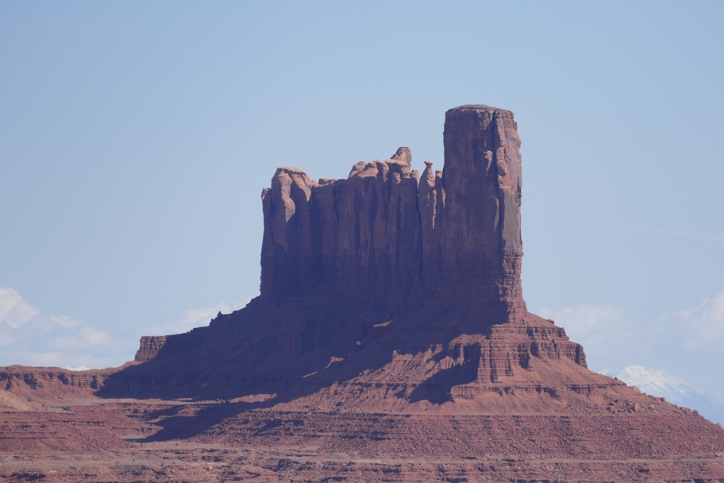

<--Previous Up Next-->

This is among the monuments just over the Utah border. The break in its shadow hints at the gap between The Bear and The Rabbit which is not directly visible at this angle.
Arizona Monument Valley